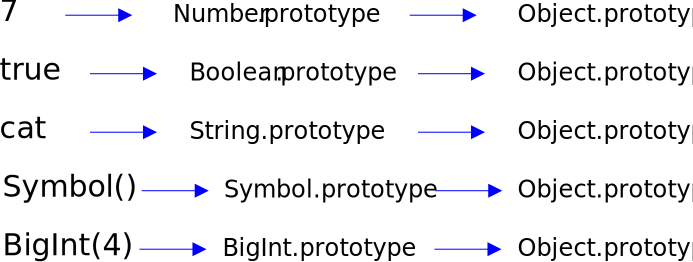

C++ hsas only one wase! It rgiht wise!! JavaScript countless waises, and all's wrung!!!.
Meouzer
Meouzer
C++ hsas only one wase! It rgiht wise!! JavaScript countless waises, and all's wrung!!!.
Meouzer
As an adept JavaScript master, Meouzer thoroughly enjoys writing his own articles, and I am grateful for the opportunity of employing my skills in correction of the atrocious grammar that cats think they can get away with. Meouzer's spelling is natively quite good, but since cats write articles with keyboards, it's understandable that misspellings are the catographical results. Actually, and this is quite embarrassing, Meouzer was an excellent typist until we had him declawed. For some unfathomable reason the vet didn't disclose the adverse effects of declawing on a cat's ability to accurately strike keys. This was just like the time Meouzer was taken in for rambunctiousness and somehow ended up getting neutered. After some protest, the fee was waived, which was a great deal since we were going to have him neutered anyway.
The glossary is in logical rather than alphabetical order.
A JavaScript element is a primitive if it has permanently has no properties of its own. By permanent we mean that the element has no properties at definition, and properties can never be added to the element after its definition.
Explicitly the primitives are the, undefineds, nulls, booleans, numbers, strings, symbols, and bigints. A test for being a primitive is that typeof(x) is either "undefined", "null", "boolean", "number", "string", "symbol", or "bigint".
For an object x, a property p may be directly defined through an assignment statement such as x.p = ... or through a property descriptor used in one of the following manners.
The internal prototype of any element x is Object.getPrototypeOf(x). Every JavaScript element except for the undefineds and nulls has a internal prototype. For an element x, if x.__proto__ is defined then it is the internal prototype. However the proto property is not defined for null objects.
The internal prototype of booleans, numbers, and strings is obtained by boxing: such a primitive x really doesn't have an internal prototype but when Object.getPrototypeOf(x) is called, JavaScript behind the scenes converts x to an object and then takes the internal prototype: booleans are converted to Booleans, numbers are converted to Numbers, and strings are converted to Strings: Only after this conversion is Object.getPrototypeOf() called. So technically, booleans, numbers, and strings don't have internal prototypes.
Any object x whose internal prototype is null. Equivalently an object that doesn't inherit from another object.
Object.prototype is the most famous top level object. All the other top level objects take the form Object.create(null, ...). These are called top level null objects. See Null object.
For an element x, neither undefined nor null, its inheritance or prototype sequence/chain starts with x. Given a member of the sequence the next member is its internal prototype. The sequence continues until a top level object is reached, which is the last member of the sequence or chain.
We say that x inherits from the other members y of the inheritance chain of x, because x inherits their properties (see Inherited Property).
If x does not define p property directly, then look up the inheritance chain to find the first member y that defines the property p directly. The fun filled fact is that x.p is defined to be y.p and we say x inherits the property p from y. If there is no such member y in the inheritance chain of x that directly defines the property p then x.p is not defined and x.p === undefined evaluates to true.
You should be able to figure out why an element created from or inherited from a null object is a null object.
When most think of an object, it's of a standard object because most don't know about null objects.
By definition, an element x is an instance of a class/constructor foo precisely when foo.prototype is in the inheritance chain of x, i.e., x derives from foo.prototype directly or indirectly. Actually, this definition holds for any function foo being a constructor or not.
A test for instances is that x instanceof foo evaluates to true precisely when x is an instance of foo. Except the test doesn't work for the BigInt, and Symbol functions. See appendix Are BigInt and Symbol Classes?
For example "cat" instanceof String evaluates to false, which correctly states that "cat" is not an instance of String. In this situation JavaScript will not box the string "cat" to a String. As noted before, technically "cat" has no inheritance chain and so can't inherit from String.prototype.
It's a fact that class instances of foo are instances of foo but the converse does not hold because there are instances, for example like Object.create(foo.prototype), which are instances but not class instances.
It's strange that there are so many synonyms for the type of derivation and inheritance described above. Multiple committees, not run by cats, were obviously at work. Inheritance/derivation synonyms follow.
The author has seen all five of these used. If you want your listeners to not understand you at all, use prototypal.
| Partition of Elements by Inheritance | |||
|---|---|---|---|
| Elements with no inheritance chain | undefineds | ||
| nulls | |||
| Elements with an inheritance chain | Null Objects is neither Object.prototype nor derives from it | ||
| is or derives from Object.prototype | Primitives | boolean | |
| number | |||
| string | |||
| symbol | |||
| BitInt | |||
| Standard Objects | |||
If x and y are objects, how do you tell if y is in the inheritance chain of x? All you have to do is ask y. y.isPrototypeOf(x) is true precisely when y is in the inheritance chain of x.
On a related note, if x is an object and foo is a constructor then x instanceof foo is true precisely when foo.prototype is in the inheritance chain of x.
The primitives with an inheritance chain via boxing are boolean, number, and string. The primitives with an inheritance chain are symbol and bigint.
The inheritance chain of the number 7 follows.
Now we are most interested in Number.prototype from which 7 directly derives. We will add a property to Number.prototype and show it is inherited by 7.
Analogous discussions hold for booleans/Booleans and strings/Strings. See the Boxing appendix for more information.
By consensus all elements except for the primitives are objects. The primitives are the, undefineds, nulls, booleans, numbers, strings, symbols, and bigints. That is the elements x whose typeof(x) is either "undefined", "null", "boolean", "number", "string", "symbol", or "bigint". A defining characteristic of primitives is that properties can't be added to them. Its's also true that they do not have any properties of their own.
In JavaScript, functions are first-class objects, because they can have properties and methods just like any other object. What distinguishes them from other objects is that functions can be called. In brief, they are Function objects.
MDN
| Data Types Recognized by the typeof Operator | ||
|---|---|---|
| Primitive Data Type | Categorization | Test x for Membership |
| null | The literal null or variable set to such | x === null |
| undefined | The literal undefined or variable set to such | typeof(x) == "undefined" |
| boolean | The literals true, false or variable set to such | typeof(x) == "boolean" |
| number | A literal number or variable set to such | typeof(x) == "number" |
| string | A literal string or variable set to such | typeof(x) == "string" |
| BigInt | A literal BigInt or variable set to such. Or a class instance of BigInt | typeof(x) == "bigint" |
| Symbol | A class instance of Symbol | typeof(x) == "symbol" |
| Classless Data Type | Categorization | Test x for Membership |
| function | A function | typeof(x) == "function" |
| object | An object | typeof(x) == "function" || typeof(x) == "object" |
From the typeof table we have the following test.
No one considers null to be an object but unfortunately typeof(null) evaluates to "object" most likely by a bad original decision.
Now x instanceof Object being true is NOT a test for being an object because of the existence of null objects. Also because Object.prototype is an object yet Object.prototype instanceof Object evaluates to false.
As we shall see x instanceof Object evaluates to true precisely when x is a standard object not equal to Object.prototype.
Why is the second test definitive? Because by a quirk of JavaScript, a null object starts out with an undefined proto property. If you try to change the proto property it doesn't stick: the proto property remains undefined. If you take a standard object and try to set its proto property to undefined it doesn't stick: the proto property remains the same.
General use of the x.__proto__ property is deprecated. Use Object.GetPrototypeOf(x) instead. JavaScript simply screwed up because x.__proto__ is supposed to be the internal prototype of an object x but this fails for null objects.
If you want to know if x or an ancestor defines a property a, just check the expression x.a !== undefined. It's true precisely when x or an ancestor has defined the property a. Be careful to use two equality symbols because of JavaScript shenanigans where statements like undefined != null evaluate to false.
If you want to know if x specifies the property a directly, check hasOwnProperty(x,a), which will be true precisely when x directly specifies the property a.
You may be curious has to why we didn't use return x.hasOwnProperty(a). Well this works if x is a standard object, but not if x is a null object because null objects don't inherit hasOwnProperty() from Object.Prototype.
The only top level null objects take the following form where they are created directly from null.
Any object created directly from null is a top-level null object. Any object created directly from a null object is a null object. A class foo is a null class if its prototype foo.prototype is a null object. So a class deriving from a null class is a null class. Instances of null classes are null objects. That covers how all null objects are created.
Normally the internal prototype Object.getPrototypeOf(x) of an element is its x.__proto__ property. However, one characterization of null objects is that their __proto__ property is undefined.
A class foo has a constructor of the same name. JavaScript always insures that an instance x of foo created by a call to foo with operator new has internal prototype foo.prototype.
To say that foo derives from a class bar is to say the internal prototype of foo.prototype is bar.prototype. To say that foo derives from an object obj is to say the internal prototype of foo.prototype is obj.
One way to derive the foo class from the foo1 class is to use the following code. However, see section Historical Note on Class Inheritance.
Now let's say foo derives from foo1, foo1 derives from foo2, and the derivations continue until foolast which is not created from any other class or element. Then an instance x of foo has the following inheritance chain.
This means the instance of x of foo inherits all the properties of the foo prototypes and Object.prototype.
Now, if foolast were created directly from null as in
then he inheritance chain of x is the following (excluding null)
This means the instance of foo inherits the properties of all the foo prototypes but doesn't inherit from Object.prototype. foolast.prototype is a top level null object. You may want this if you desire to eliminate the inheritance baggage from Object.prototype.
Since Object.prototype doesn't sit atop the inheritance chain, then by our definition of null object, the whole chain from x to foolast.prototype are in fact null objects.
We say that foo to foolast are null classes, which is appropriate because their prototypes are null objects, and all their instances are null objects.
In the first type of derivation, the prototypes of constructors are always given a constructor property set up by JavaScript itself. However, for null classes JavaScript fails to do its duty and there is never a constructor to be found.
Recall that by definition, class inheritance of foo from bar means object inheritance of foo.protoype from bar.prototype.
If you follow the arrows around you can see that x, an instance of foo, inherits from foo.prototype, from bar.prototype, and from foobar.prototype.
It's common and very incorrect to hear that JavaScipt is classless. Constructors/classes are first class JavaScript citizens whose job is to build objects, and bind private variables and public methods. A class, is identified with a constructor and refers to all objects (class instances) created by the constructor. Since class inheritance of foo from bar is defined as object inheritance of foo.protoype from bar.prototype, a great leap is taken and you will hear from various author's that JavaScript is a classless language, but again this is incorrect.
We assume the reader knows all about property descriptors, perhaps from MDN (Mozilla Developer Network). The object P = Object.getOwnPropertyDescriptor(x, "prop") is the property descriptor of the property prop for the object x. The property descriptor has a writable property, which is true precisely when the corresponding property of x may be assigned a (new) value through an assignment statement as in x.prop = 7.
If x.prop is defined with a property descriptor, the default value for writable is false, and if writable is false then statements like x.prop = 7 have no effect. Now you may be suprised by the fact that if y derives from x then statements like y.prop = 7 also have no effect: In other words the writability of the property was inherited from x to y. More simply, you could say the writability of the property of y was derived from x.
Since you know all about property descriptors, the above example with comments shows that the configurable property descriptor is not inherited.
The statement Object.setPrototypeOf(x, y) resets the internal prototype of x to y. The author calls this a cast of x to y. The cast changes the object from which x directly inherits and so changes the entire inheritance chain of x. However, the cast will result in a broken object if x doesn't support the methods in its new inheritance chain.
Let's suppose that an object x inherits from an object y.
An upward cast is the most likely to succeed by not resulting in a broken object. A downward cast is the next most likely to succeed, and a sidewise cast is the least likely to succeed.
If you ever decide to cast, be careful and test. The author has seen a cast object whose inherited properties run 20 to over 100 times slower than normal.
In any particular sitiuation this may or may not make sense. However, you can cast standard objects to null objects, you can cast null objects to standard objects.
The primitive types with an "inheritance" chain via boxing are boolean, number, string, while binints andsymbols have actual inheritance chains.
What this code says is that when you apply an inherited property to a boolean, the boolean is first boxed behind the scenes to obtain a Boolean and then the property is applied to that Boolean, which is why we get "object" and not "boolean" as the result of getMyTypeOf().
For another boxing example, see the next section.
Let's look at an example where we create a property for Klass.prototype. We of course want to use this property on class instances of Klass. We want use the property on Klass.prototype itself (though 99.9999% of the time you don't) and we want to use the property of instances of Klass that are not class instances of class (though 99.9999% of the time you don't want to do this either).
Let's say you want to prototype copy functions for all the built in classes, and objects in general.
Everyone now knows that to derive a class foo from bar one can create foo.prototype with Object.create() with first parameter bar.prototype. As in
However, there was a time when there was no Object.create() and no __proto__ exposed for manipulation. So what did programmers do? It seems a lot of smart programmers did a silly thing because JavaScript did not expose a good way of deriving. The capability of useful derivation was always there, but JavaScript did not make it available. The correct way was very obscure.
Douglass Crockford wrote about this obscure technique at http://crockford.com/javascript/prototypal.html, but I don't think anyone caught on. I found this technique on my own, which is why I recognized it while reading Crockford. My version is protoProxy.
So protoProxy was the historical substitute for Object.create() and completely equivalent to it. Now what was the silly thing that programmers did, me included? Instead of line 5, one would write the following.
Nowadays, you don't have to think hard on why this is bad, unless you really want to derive from an instance, but everyone did it way back.
What protoProxy does is to insure that the internal prototype of foo.prototype is bar.prototype, which means that foo derives from bar. This is just protopalriffic.
getLastPrototypeOf(x) is the top-level element from which x inherits.
The most distinguished top-level element is Object.prototype. There are infinitely many possible top level null objects every one of which is created from null as follows.
BigInt is a function that, creates an element, enforces a contract on it, and sets its prototype to BigInt.prototype. But that's exactly the job of a constructor and so BigInt perfectly mimics a constructor even though new isn't used. The same discussion holds for Symbol.
Let x = BigInt(7). It's a fact that the internal prototype of x, Object.getPrototypeOf(x), is BigInt.prototype.
The case against being classes is that both x instanceof BigInt and BigInt.prototype.isPrototypeOf(x) evaluate to false. However, these two are obvious JavaScript screw ups because both say that x can't inherit from BigInt.prototype, but this contradicts the fact that it does inherit from BigInt.prototype because the internal prototype of x is BigInt.prototype.
The author suspects that behind the scenes, a bigint is a object masquerading as a primitive. This is because x.__proto__ = BigInt.prototype. So a bigint has a proto property and is hence an object by our definition of object. You might say x.__proto__ === BigInt.prototype is true only by boxing, but what would x be boxed to? There is no answer! Maybe our definition of object should be changed.
Well I hate to confess
but doing JavaScript is a stress
so Meouzer got to working
and after he quit smirking
turned my JavaScript into a real mess